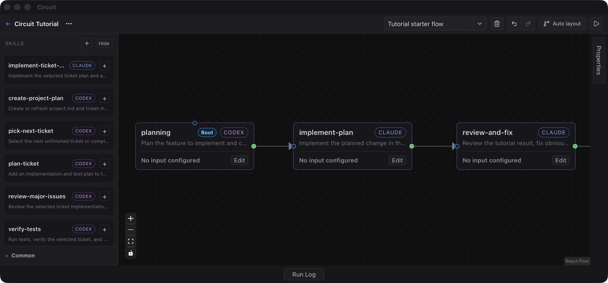

Build visual skill workflows
Place skills on a canvas, connect dependencies, and reshape repeatable routines without reconstructing them from memory.
Turn Claude and Codex skills in your repository into visible, repeatable, controllable development workflows.

Why Circuit
Long prompts and terminal streams hide the shape of a process. Circuit keeps skill order, run state, failures, and recovery paths visible in one desktop workspace.
Place skills on a canvas, connect dependencies, and reshape repeatable routines without reconstructing them from memory.
See what is running, what completed, where a failure happened, and whether an active run should be cancelled.
Keep cyclic workflows visible and require confirmation before running paths that can repeat indefinitely.
Read both skill directories from the same local repository and choose the execution capability that fits each step.
Visual workflows
Circuit turns skill order and dependencies into something you can inspect and adjust. Planning, implementation, review, and commit steps can move as the team's process changes.
planning -> implementation -> review -> commit
planning -> implementation -> commit -> review
planning -> check-token -> implementation -> review
Run visibility
Active workflows can be cancelled, completed steps remain visible, and failed runs are easier to inspect because the stopping point is still on the graph.
Circuit keeps the current node, completed nodes, and run output close together so failures are easier to locate and recover from.
Loop handling
Some routines need to repeat after review, validation, or failure. Circuit shows cyclic paths before execution and asks for confirmation when a workflow can run indefinitely.
Claude and Codex
Circuit reads Claude and Codex skill directories from the local project and treats them as execution capabilities that belong in the same workflow, not as competing islands.
GitHub Pages
No backend, no build step, and no mock agent runtime. Publish the page from the repository settings by selecting the `docs/` folder as the Pages source on the target branch.